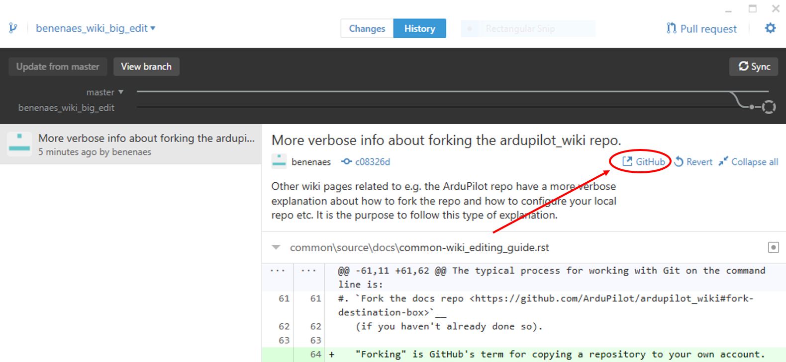
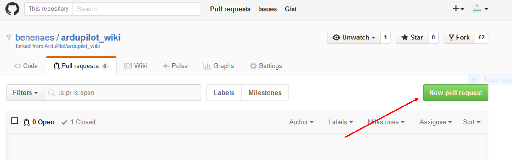
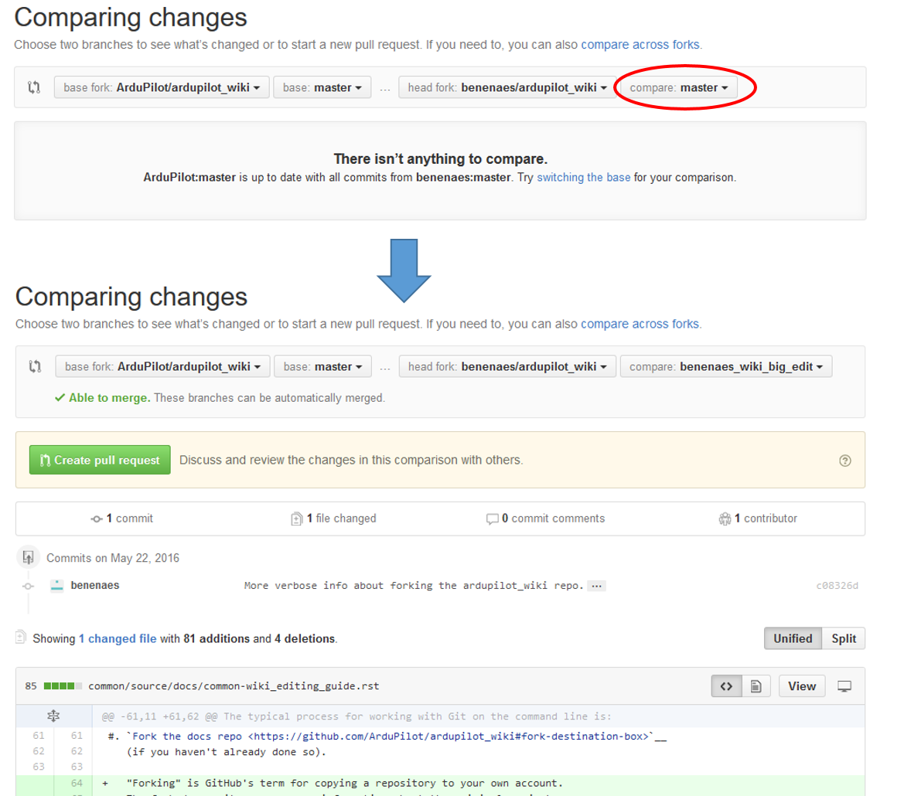

Wiki Editing - Submitting Changes¶
Once you have completed changes to the wiki on your local machine and tested they are rendered correctly, follow the instructions below to submit a PullRequest to have them included in the wiki. This is the same PR process used for the flight code
Note
If you are not familiar with Git and GitHub please refer to the Using Git pages to learn the basics.
There are a number of way of using Git/Github - including a number of different GUI and command line tools. The typical process for working with Git on the command line is:
Rebase your repo’s master branch on the upstream ardupilot_wiki repo’s master branch:
The very first time a “remote” pointing back to the upstream ardupilot_wiki repository must be created
git remote add upstream https://github.com/ArduPilot/ardupilot_wiki.git
Switch to your repo’s master branch
git checkout master
Note
If the above command fails because of changes made to some files, temporarily “stash” the changes by typing
git stash save my-changesand then later re-applied the changes by typinggit stash apply stash@{0}Pull in the changes from upstream/master to your master branch
git fetch upstream git rebase upstream/master
Note
Be sure to repeat these first steps if you make new changes in the future, to assure that your local repo is up to date
Create a branch in your local clone for your changes
git checkout -b my_well_named_branch
Make any changes needed and test them locally
Add (aka “Stage”) and Commit your changes:
git add the_name_of_file_you_changed.rst git commit -m "A short explanation of the change"
Push your commits to your fork on GitHub
git push --set-upstream origin my_well_named_branch
Open your clone’s repository on the GitHub web page and Create a pull request on GitHub. You’ll be making a pull request from your fork/branch on GitHub to the ardupilot_wiki/master repository. If using the GitHub for Windows client, one convenient way to navigate to the repository/branch is to click one of your commits and click the “github” (view this commit on github.com) button:
On top of the web page select the “Pull Request” tab page, and then select the green “New pull request” button:
The comparison should be between ardupilot_wiki:master and the new branch you created. The website probably has defaulted to your clone’s master branch so click the “compare” combo box and change it to the correct branch:
Check the list of change at the bottom of the page only includes your intended changes, then press “Create pull request”.
{kind=link}
{kind=link}
{kind=link}
How to get changes approved¶
All changes to the wiki are reviewed by the wiki “maintainers” to help reduce the chance of misleading or incorrect information being posted. Feel free to post comments in the PullRequest and/or attend the weekly dev meeting to escalate getting your changes submitted.
[copywiki destination=”copter,plane,rover,planner,planner2,antennatracker,dev,ardupilot,mavproxy”]